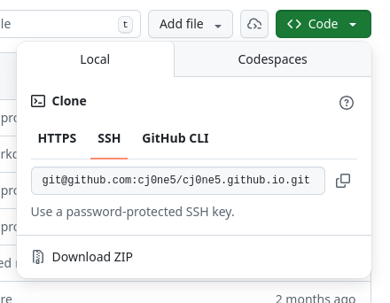

If you're here, it probably means that your laptop got re-imaged. The beauty of git is that all of your code is saved in the cloud - you just need to download it to your new computer. Here are the steps you need to follow:
1. Click "Terminal"
2. Click the shell text entry area

3. Type "git Enter".
When you do this, you might get a popup saying that you need to install "command line developer tools." This is a set of command line tools that are part of your mac operating system, but that most people don't use. So they aren't installed by default. You'll need them for assignments in this class.
You should follow the instructions to install. A few tips about this step:
Tip: This part probably won't make a ton of sense for right now. We'll spend more time talking about exactly what these commands do in class a few sessions from now. For now, just follow the instructions closely!
4. Go back to the terminal

5. Type these two commands. These set the name and email that will show up on the public website next to your commits. You can choose any reasonable user name (I chose to use my real name. You could choose to use just your first name, or your github username.) The email should be the same as the email you used when you signed up for your github account.
git config --global user.name "Chris Jones"
Enter
git config --global user.email
"cmj2310@email.vccs.edu" Enter
6. Type this:
ssh-keygen -t rsa Enter
7. It will ask
you a few questions - you don't even have to read them. Just press
Enter a few times until it stops asking you
questions.
8. When you're finished, it'll show you some 'randomart.' You don't need to do anything with it.

9. That process created some new files for you, in a special folder on your computer. To find them, type
ls ~/.ssh Enter
You should see at least two files listed:
The file that ends in '.pub' is your "public key", and the other one is your "secret key". These two files work together. The public key is for sharing, and we'll copy/paste it into a website soon. The secret key is, well, a secret. You should never share it with anyone!
10. Let's look at your public key. Type this:
cat ~/.ssh/id_rsa.pub Enter
It should look something like the screenshot below.

11. Highlight the entire thing (starting with "ssh-rsa"), right click, and "Copy".

Tip: I'm describing how to do this in Github here, In Codeberg the steps are the same, but the screenshots will look a little bit different.
12. Login to Github, then start by clicking on your profile picture in the top-right of the screen.

13. Click "Settings"

14. Click "SSH and GPG keys"

15. Click "New SSH key"

16. Paste the 'ssh-rsa' key that you copied earlier into the box labeled 'key'. In the box labeled "Title", type something like "My School Macbook"

17. Click "Add SSH key"

18. You'll see a banner that says that you successfully added the key. If so, you're done! While you're here, you might want to delete any old SSH keys that you no longer have access to.

19. Navigate to your repo page. For example, mine is https://github.com/cj0ne5/cj0ne5.github.io
20. Click on the green button that says "<>Code" in the top-right corner. Then select the "Local" tab and the "ssh" option. Copy the text that it provides (it should start with 'git@')

21. Return to the terminal and navigate to wherever you want the repo to live on your computer (most students choose to go to your desktop)
22. Type:
git clone
Then paste the address you copied from github and pressEnter
23. It might ask you a question about a 'fingerprint'. If it does, type the word yes and press Enter
Git is all setup now! Depending on which class you're in, there are a few other configruation steps you should follow: